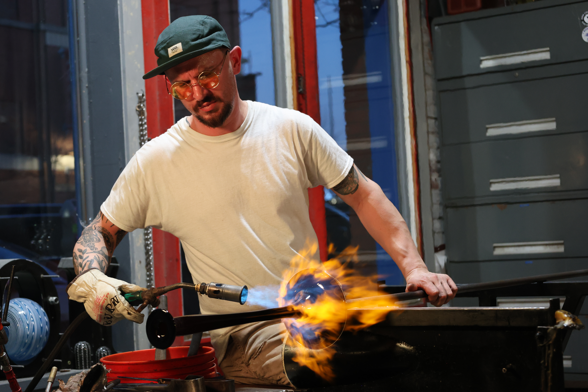

INDEPENDENT VISUAL STUDIOTOLEDO, OH / USA
REAL
MOMENTS.
NO REPEATS.
CBK / 001 — EST. 2025
Photography and motion for people, sports, events, and stories worth holding on to.

IMAGE / 001SELECTED WORK
03 / THE WORK
A BETTER
LOOK.
People, places, and the split seconds in between.
SELECTED FRAMES / CBK ARCHIVE


04 / EVENT PHOTO STORE
FIND
YOUR
FRAME.
See yourself in the action. Browse an event, select your favorites, and receive your purchased photos without the watermark.
BROWSE ALL GALLERIESAVAILABLE EVENT GALLERIESCBK / SHOP
LOADING EVENT GALLERIES… OPEN PHOTO STORE ↗
05 / CAPABILITIESWHAT WE
01 /SPORTSGAMES · TEAMS · ATHLETES
02 /PORTRAITSPEOPLE · FAMILIES · SENIORS
03 /EVENTSMILESTONES · COMMUNITY
04 /CREATIVEVISUAL CONCEPTS · MOTION